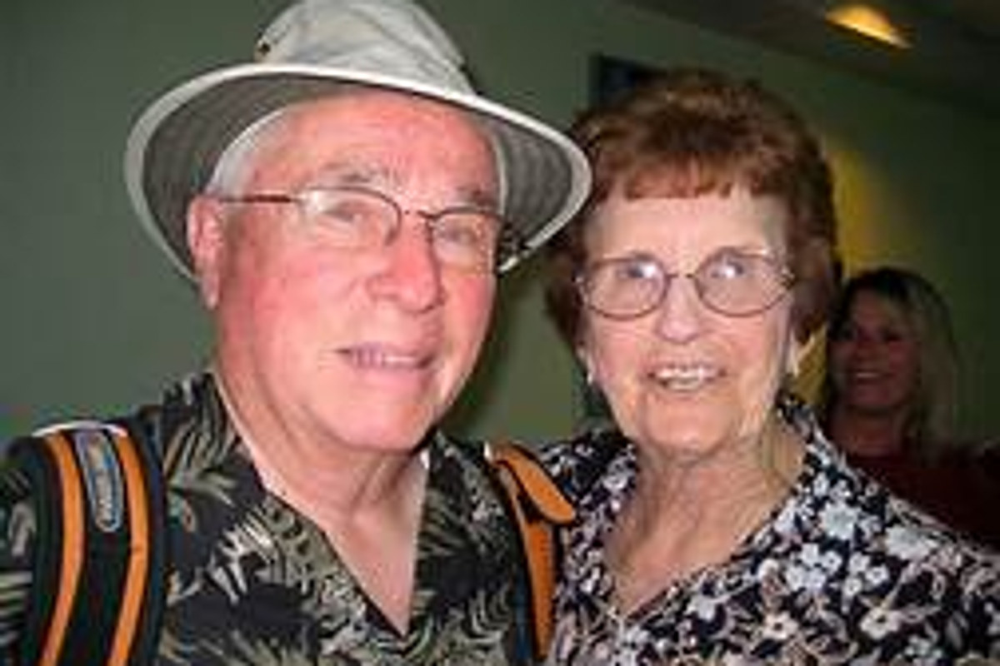
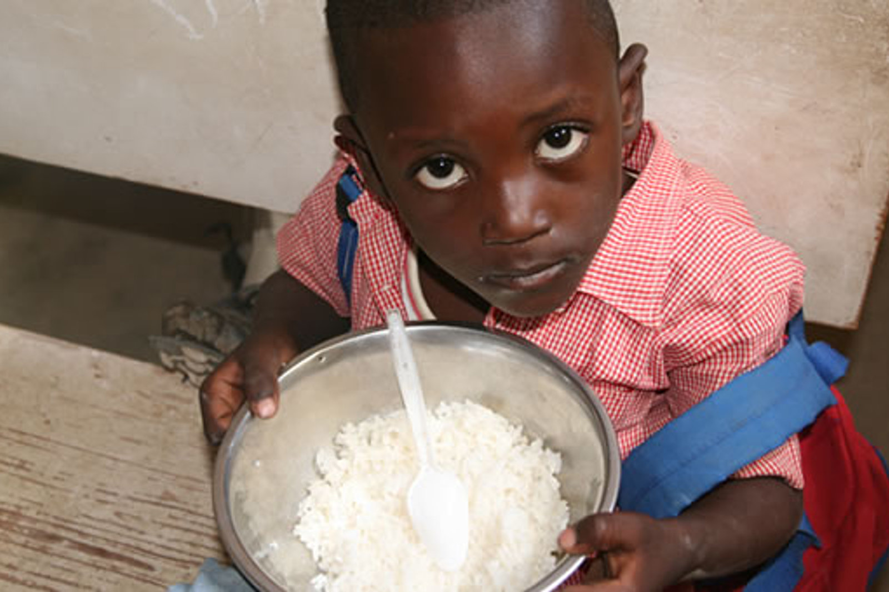
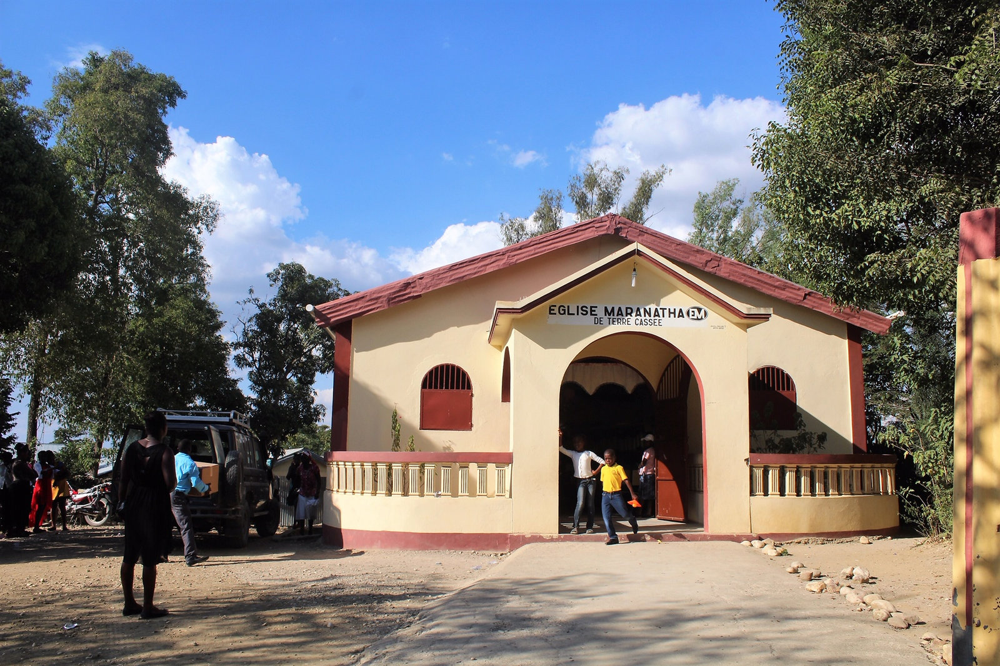
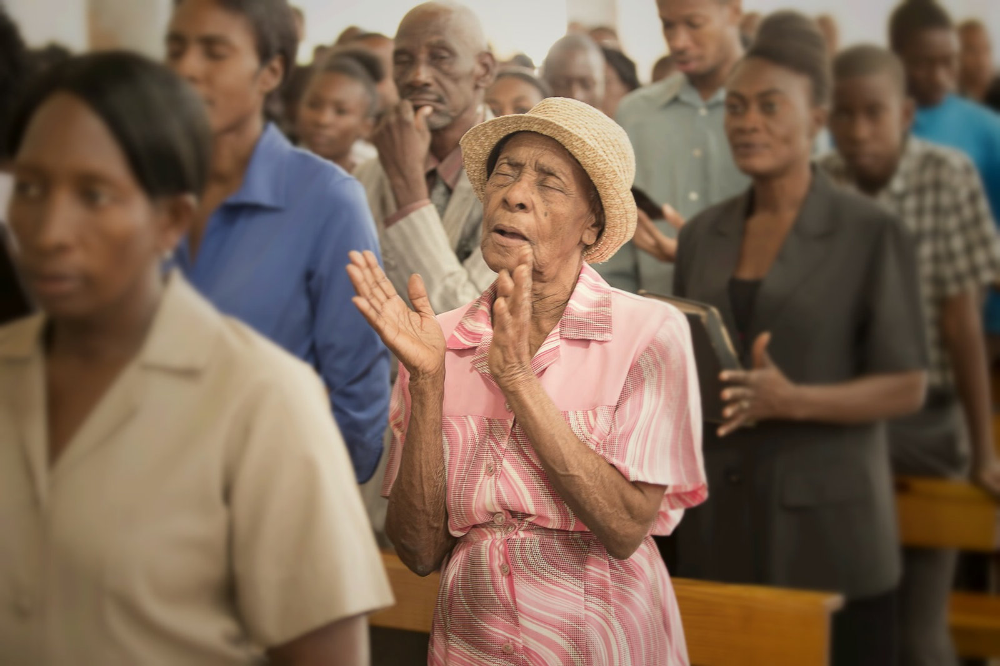
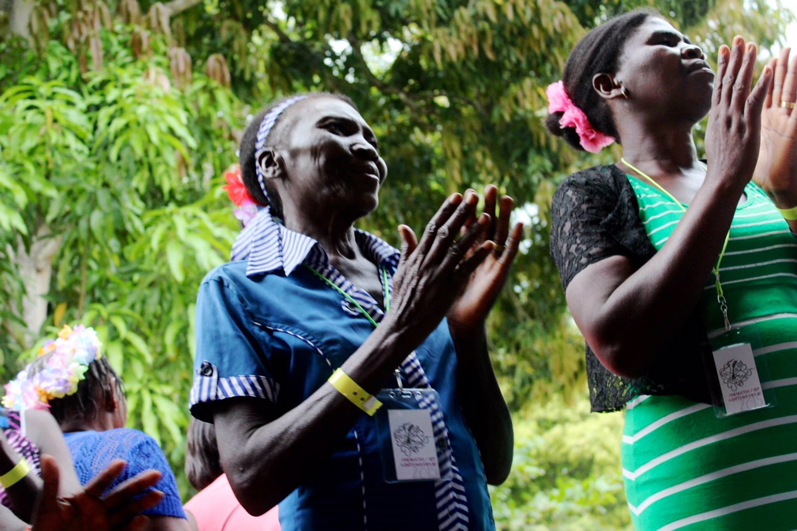
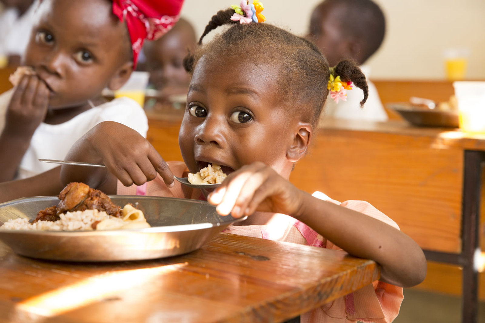
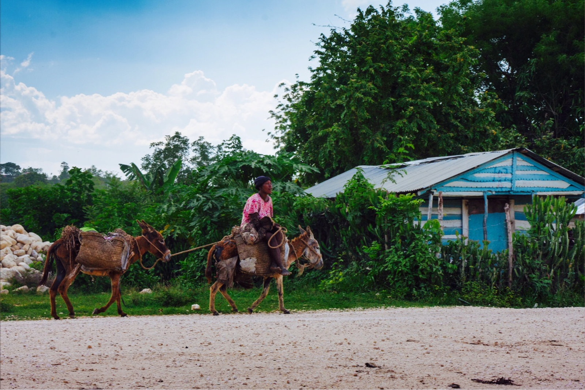

God's hands and feet, where the road ends.
Haiti Endowment Fund raises up, supports, and encourages the local Haitian body of Christ to minister to its own community — through schools, daily meals, clean water, churches, and the gospel of Jesus Christ.
"Ruined for the normal."
To raise up, support, and encourage the local Haitian body of Christ.
We are a non-profit, non-government organization rooted in the Central Plateau of Haiti. Our work is carried out by Haitian pastors, teachers, and leaders — men and women called by God to serve their own neighbors.
From a 25-acre compound in Hinche, we partner with local churches and schools to feed children, train leaders, dig wells, support widows and the elderly, and proclaim the gospel. Every U.S. role is volunteer. There is no paid American staff.
That's how more than 95¢ of every dollar reaches the people of Haiti.
"Pure and undefiled religion before God and the Father is this: to visit orphans and widows in their trouble, and to keep oneself unspotted from the world." — James 1:27
A quick overview of who we are.
Three and a half minutes from the Haiti Endowment Fund team — what God has been doing in Hinche, in their own words and pictures.

A life poured out for Haiti.
Harold Bither, born in Houlton, Maine, met Natalie — a New Jersey girl from Waldwick — at Zion Bible Institute in Providence. They married in 1950 and spent the next seven decades in ministry: a circuit pastor in rural Maine, then Brooklyn, Massachusetts, Alaska, and finally California.
When God called them to Haiti, the Central Plateau became their heart's home. For more than twenty-five years they worked daily to build this ministry — one school, one well, one church at a time. The people of Haiti became the sole purpose of their lives.
"Let your light so shine before men, that they may see your good works and glorify your Father in heaven." — Matthew 5:16
Twelve programs. One calling.
Every program below is led on the ground by Haitian pastors, teachers, and tradesmen — supported by partners like you.
Education
13 sponsored schools serving more than 3,000 Haitian children every school day.
3,000+ studentsDaily Nutrition
3,000+ hot meals served every school day — for many children, the only meal they will eat.
Hot meal programLocal Churches
17 sponsored Haitian churches — each pastored by a local believer trained in Hinche.
17 congregationsWells & Cisterns
Clean water for remote villages where families have only known a contaminated river.
InfrastructureAgriculture
Chicken and fish projects, demonstration gardens, and aquaponics that feed families and teach trades.
Food securityConferences
Annual conferences for women, children, pastors, and teachers — up to 300 Haitians at a time.
DiscipleshipMedical Clinic
Onsite physical, eye, and dental care for the surrounding community.
HealthcareDeaf Ministry
A ministry for the Deaf community of Hinche — sign language, fellowship, and the gospel.
SpecializedWidows & Elderly
Benevolence support — food, medicine, and dignity for those most overlooked.
CompassionCamps & Kids
Children's camps, women's learning center, and youth events that change futures.
Next generationFire Department
Community partnership with Hinche's first responders — one of the only fire services in the region.
CommunityShort-Term Teams
Visiting teams stay on the compound with secure lodging, fresh water, solar power, and transport provided.
Get involvedThe faces behind every gift.
A meal. A hymn. A church built from cinder block. The work of God's people, photographed where it actually happens.






Twenty-five acres of ministry, built one structure at a time.
From the very first acre of cleared land to the guesthouse, clinic, dormitories, and gardens that stand today, the compound has grown alongside the work. Every building is the answer to a specific need — and a specific prayer.
- ✓Guesthouse for visiting teams (built 2007, sleeps 28)
- ✓Onsite medical clinic — physical, eye, and dental care
- ✓School-feeding warehouse and demonstration garden
- ✓Aquaponics, solar power, and fresh water systems
- ✓Dormitories that host conferences of 300+ Haitians
Because the need is real, and the church is faithful.
Haiti is the poorest country in the Western Hemisphere. In Greater Hinche — a region of roughly 100,000 people — most families have no clean water and no public electricity. But the Haitian church is alive, and she is ready to serve. We come alongside her.
Your gift goes directly to Haiti.
Every U.S. role at HEF is volunteer. There are no salaries, no overhead departments, no paid fundraisers. More than 95¢ of every dollar arrives in Hinche — as a meal, a textbook, a bag of cement, or a Bible.
What your gift does
HEF is a registered 501(c)(3) non-profit. All donations are tax-deductible to the extent allowed by law.
Get in touch.
Questions about a trip, a partnership, or sending a gift by mail? We'd love to hear from you.
Haiti Endowment Fund
P.O. Box 743
Temecula, CA 92593